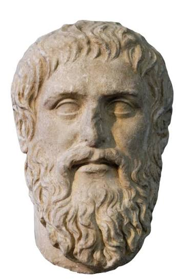
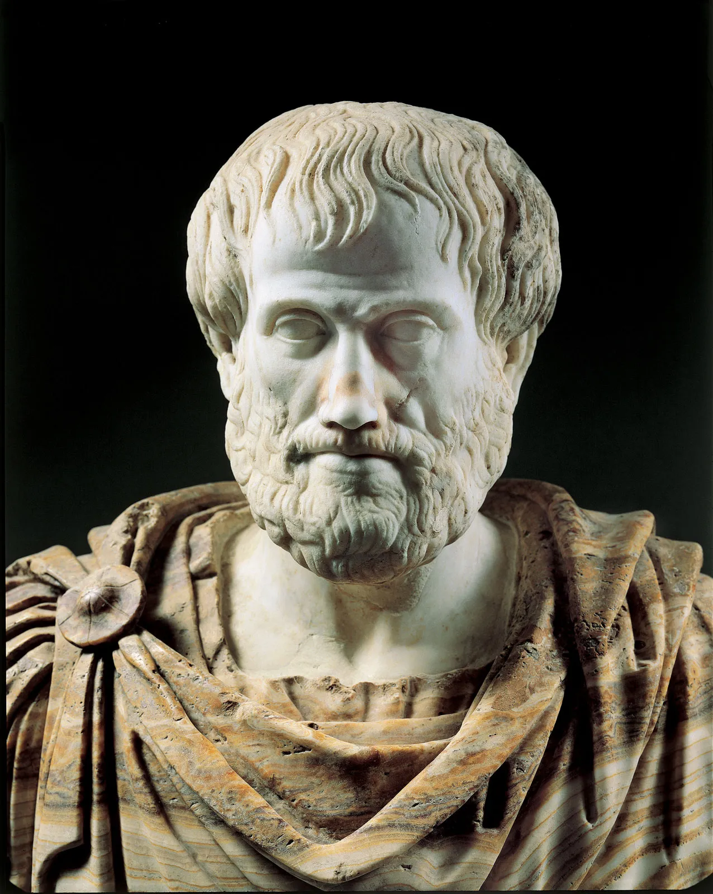
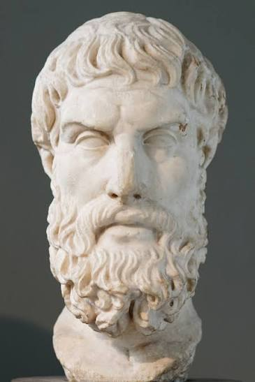

Philosophy
What is Philosophy, The Famous Philosophers
Plato - Πλάτων (c. 428/427 - 348/347 BC)
"The world is a changing, imperfect copy of an ideal and changeless world of Forms."
«Ὁ μὲν γὰρ κόσμος γέγονεν εἰκὼν τοῦ ἀεὶ ὄντος καὶ ἀμεταβλήτου παραδείγματος.»

Aristotle - Ἀριστοτέλης (c. 384 - 322 BC)
"If there were no independent substances, there would be no forms... It is impossible that substance should exist apart from that of which it is the substance."
«Εἰ γὰρ μὴ εἶεν αἱ πρῶται οὐσίαι, ἀδύνατον ἂν εἴη τι τῶν ἄλλων εἶναι· ἀδύνατον δὲ τὸ εἶδος εἶναι χωριστὸν τῆς οὐσίας.»
What is Philosophy?
Philosophy comes from the Ancient Greek word philosophia, meaning “love of wisdom.” It is the study of fundamental questions about life, reality, knowledge, reason, and human behaviour. Philosophers try to understand how the world works, what it means to live a good life, and how people can distinguish truth from falsehood. Instead of accepting traditional beliefs without question, they use reasoning, observation, and critical thinking to explore different ideas.
Ancient Greece played a major role in the development of Western philosophy. Greek thinkers explored questions that later influenced science, politics, mathematics, and ethics. During the Classical Period (c. 480 - 323 BCE), philosophy became particularly important in Athens, where intellectual debate and the exchange of ideas were central to public life. Philosophers encouraged people to question established beliefs, examine their own behaviour, and search for explanations through reason rather than relying entirely on mythology or religious traditions.
Several important branches of philosophy developed from these discussions. Ethics examines questions of right and wrong and what makes a good life, while logic focuses on correct reasoning and how to construct convincing arguments. Epistemology explores the nature of knowledge and how people can know whether something is true, whereas metaphysics investigates the nature of reality and existence. Other areas, including political philosophy and aesthetics, consider topics such as government, justice, beauty, and art.
Greek philosophers used different methods to explore these questions. They examined arguments, challenged one another's ideas, and encouraged people to think carefully about their beliefs. One well-known approach was asking a series of questions to expose contradictions and develop a clearer understanding of a subject. These methods helped establish philosophy as a systematic form of inquiry and influenced the way knowledge was explored in later centuries.
The influence of Ancient Greek philosophy continues today. Its ideas helped shape modern discussions about morality, education, government, science, and human nature. Greek philosophers laid important foundations for Western intellectual traditions, demonstrating the importance of curiosity, rational thought, and the continuous search for knowledge.
The Philosophers

Socrates (c. 469-399 BC)

Plato (c. 428-348 BC)

Aristotle (c. 384-322 BC)

Thales (c. 624-546 BC)

Empedocles (c. 490-330 BC)

Democritus (c. 460-370 BC)

Heraclitus (c. 535-475 BC)

Pythagoras (c. 570-495 BC)

Anaxagoras (c. 500-428 BC)
